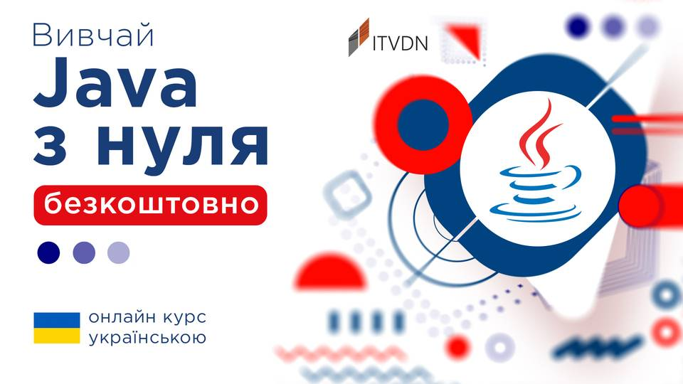
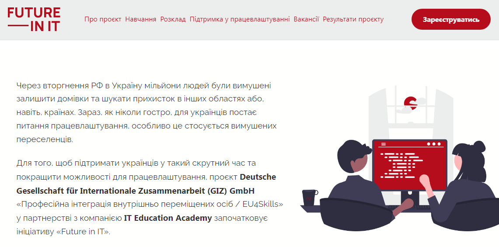
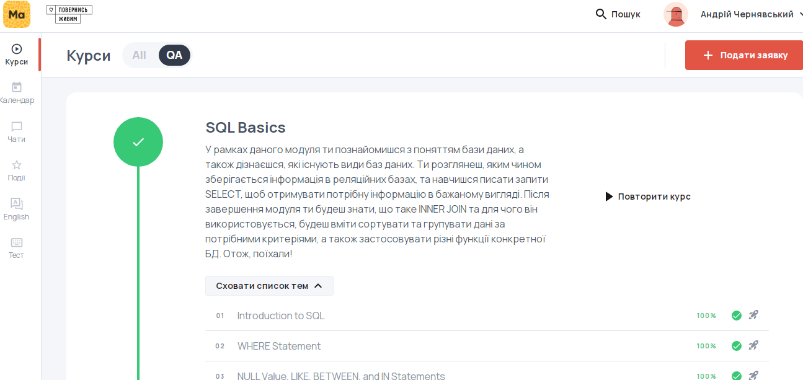
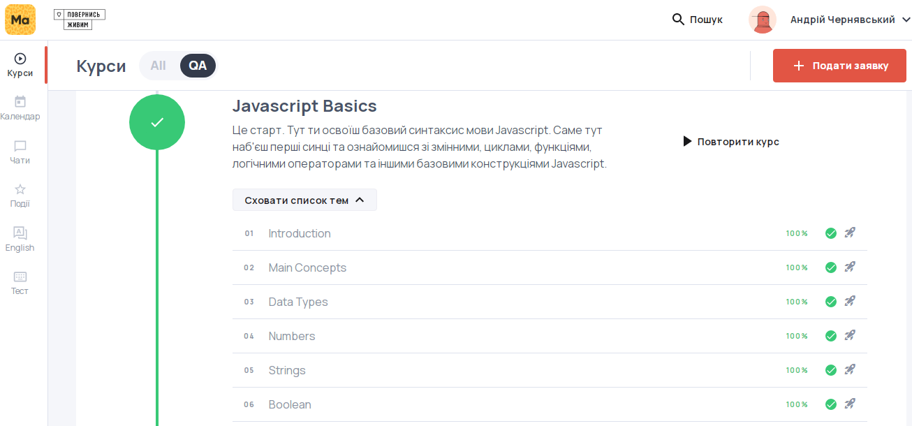

Completed the English language course level A2 from CAMPSTER.
Completed the English language course level A2 from CAMPSTER.
Completed the "Java Starter" course from ITVDN, designed for beginning programmers and testers who connect their professional development with writing tests in Java.
At CyberBionic Systematics' FrontEnd lectures, I learned basic frontend technologies and wrote a portfolio site using HTML, CSS style sheets, and Flexbox technology.
"QA Engineer" course for Ukrainians under the program Future in IT of Deutsche Gesellschaft für Internationale Zusammenarbeit (GIZ) GmbH in partnership with IT Education Academy. Received fundamental knowledge in the theory of testing, knowledge of types and methods of testing, learned and gained experience in the development of test documentation. Acquired work practice in Jira, Test Rail, Selenium IDE, Postman. Studied the basics of HTML/CSS, XPath, API and SQL. Completed the test work and successfully passed the exam.
As part of the "SQL Basics" module, I got acquainted with the concept of a database. Learned how information is stored in relational databases, learned to write SELECT queries, get the necessary information in the desired form. I learned how to use INNER JOIN, sort and group data according to the necessary criteria, and also apply various functions of a specific database.
As part of the Javascript Basics module, I learned the basic syntax of the Javascript language. Familiarized with variables, loops, functions, logical operators and other basic Javascript constructs. Completed practical tasks and passed tests.
Completed the course in English on Programme Headway Intermediate from English language center DonStream. Level B1.
Automation of technological processes and productions is training in the design and application of microprocessor tools and their programming, the organization of the work of personal computers, automated control and information processing systems, as well as systems of hydraulic, pneumatic and electric drives; acquisition of skills and abilities to work with computerized systems, administration of computer networks. Received a master's degree.